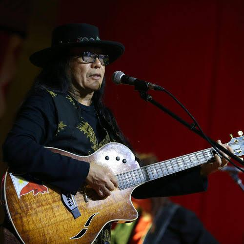
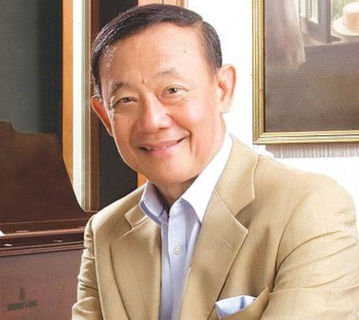

Artist: Sarah Geronimo
Born: July 25, 1988
Known as: "Popstar Royalty"
Achievements: Billboard Women in Music Award,
Mnet Asian Music Award, MTV Europe Music Award,
Classic Rock Roll of Honour Award, World Music Award
Citizenship: Filipino

Artist: Freddie Aguilar, Ka Freddie Aguilar
Born: February 5, 1953
Known as: Ka Freddie Aguilar or simply Ka Freddie
Achievements:
- His rendition of "Bayan Ko" became the anthem
of the opposition against the regime of Ferdinand Marcos
during the 1986 People Power Revolution.
- His song "Anak" is the best-selling Philippine music
record of all time, selling 33 million copies worldwide.
Citizenship: Filipino
Artist: Regine Velasquez
Born: April 22, 1970
Known as: Asia's Songbird
Achievements:
- Winner of the television talent show Ang Bagong Kampeon in 1984
- Winner of the Asia Pacific Singing Contest in 1989
Citizenship: Filipino

Artist: Yeng Constantino
Born: December 4, 1988
Known as: Philippines Pop Rock Royalty
Achievements:
- Winner of the title "Grand Star Dreamer" in the inaugural
season of Pinoy Dream Academy in 2006
Citizenship: Filipino
Artist: Jed Madela
Born: July 14, 1977
Known as: "The Voice" and "The Singer's Singer"
Achievements:
- Awit Award for Best Christmas Recording 2008 (A Perfect Christmas)
- Awit Award for Best Performance by a Duet 2008 (Hard Habit to Break feat. Gary Valenciano)
- Awit Award for People's Choice Favorite Collaboration 2017 (I'll Be There)
- Myx Music Award for Favorite Remake 2018 (I'll Be There)
- First Filipino to win the World Championships of Performing Arts title
Citizenship: Filipino

Artist: Jose Mari Chan
Born: March 11, 1945
Known as: King of Philippine Christmas Carols
Achievements:
- His repertoire has sold two million albums.
- Garnered 37 platinum records, becoming one of the best-selling
Filipino recording artists of all time.
Notable Songs:
- "Christmas In Our Hearts"
- "A Perfect Christmas"
- "Beautiful Girl"
- "Please Be Careful with My Heart"
Citizenship: Filipino
Artist: Lani Misalucha
Born: August 3, 1969
Known as: Asia's Nightingale
Achievements:
- Her music has received recognition from Awit Awards, Aliw Awards,
Box Office Entertainment Awards, and PMPC Star Awards for Music.
- Named "People of the Year" by People Asia in 2021.
Citizenship: Filipino
Artist: Ogie Alcasid
Born: August 27, 1967
Achievements:
Best known for his songwriting and collaboration with other musical artists.
Appeared in films and television shows, including Tropang Trumpo (1994–1995),
Bubble Gang (1995–2013), SOP (1997–2010), and ASAP Natin 'To (2017–present).
Citizenship: Filipino
Artist: Louie Ocampo
Born: June 21, 1960
Known for: Composer and arranger, best known for
his association with Martin Nievera
Achievements:
- Regarded as one of the pillars and icons of Original Pilipino Music (OPM).
- Composed numerous hits, mostly collaborations, including "Tell Me,"
"Kahit Isang Saglit," "Ewan," and "You Are My Song."
Citizenship: Filipino